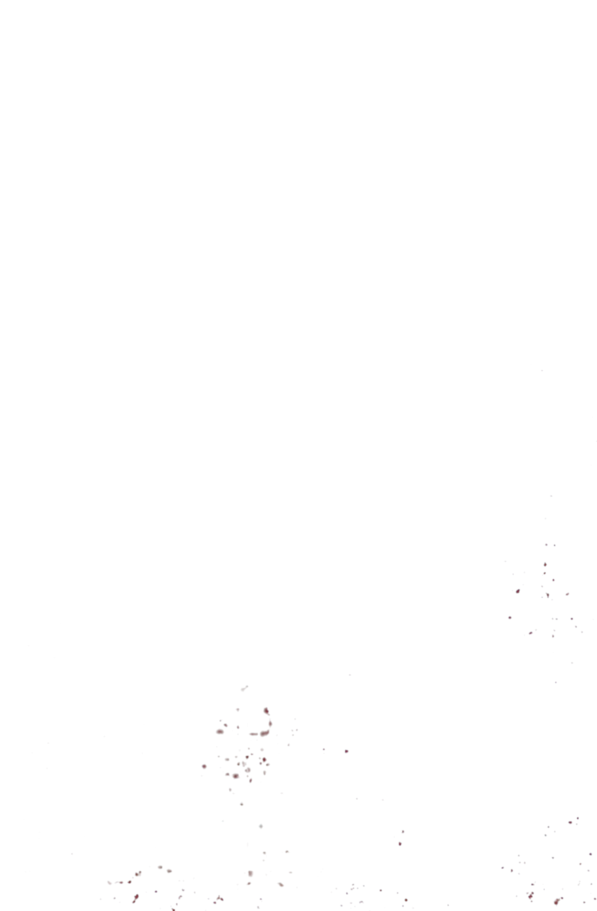
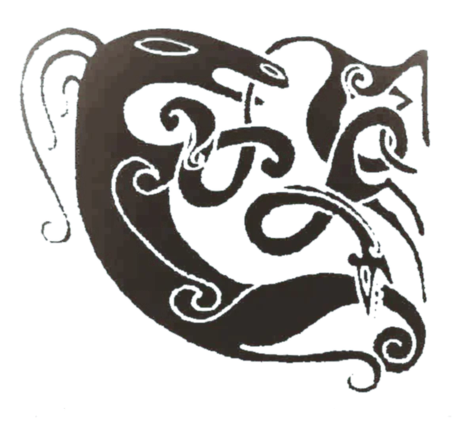
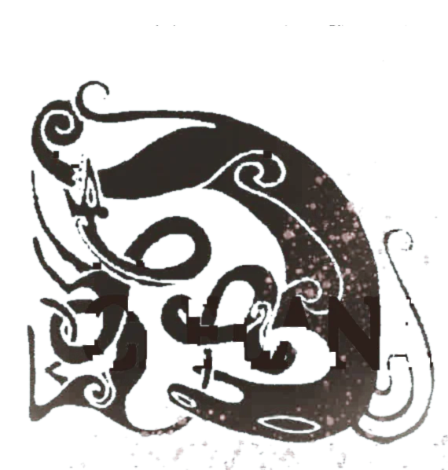
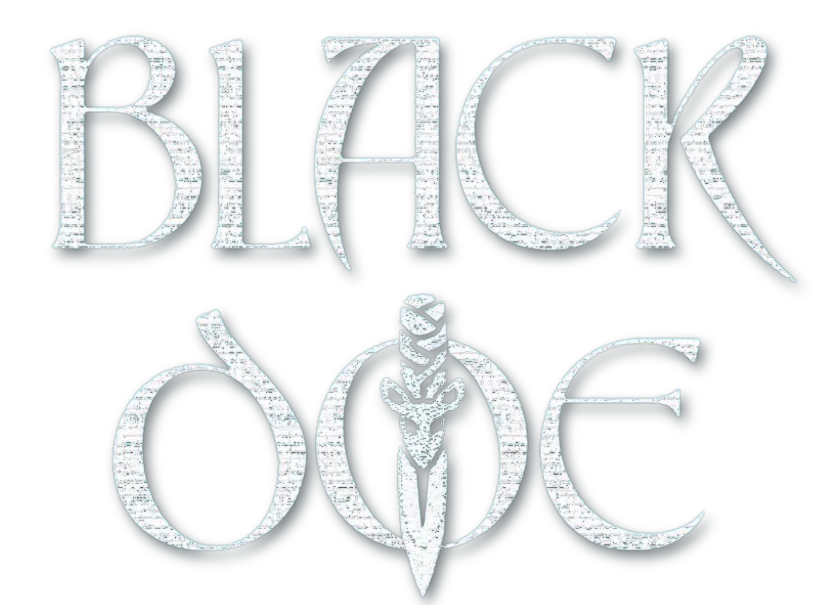
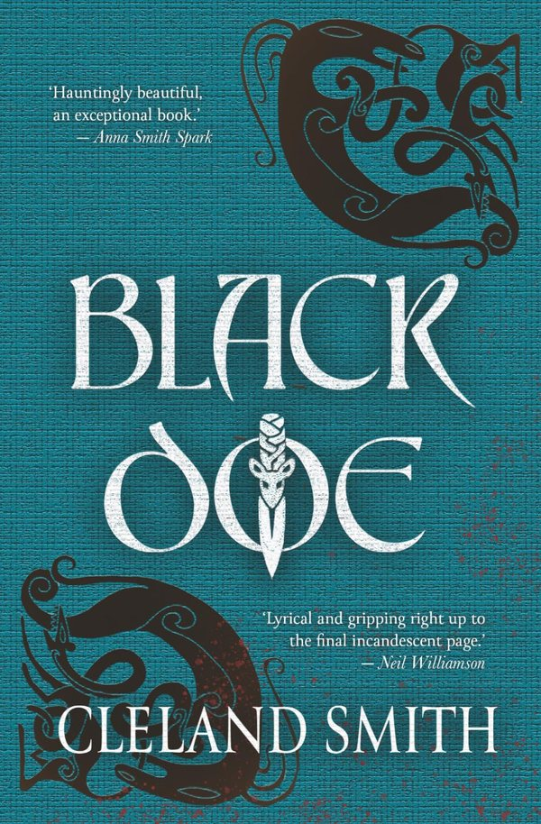
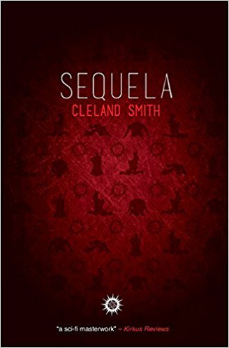

A killer who dreams another’s dreams.

Black Doe
A killer who dreams another’s dreams. A mother whose secret will sire a nightmare.
The Black Doe assassins are legends, shadows who never leave a target alive. But Bridei, one such Black Doe sent to end the threat of a rising warlord, is stabbed with her own knife, crucified, and left to die. If she is to fulfil her mission, retrieve her stolen memories, and earn her fee, she must live, and she must kill.
Tisiphone’s sons are raised on tales of the Black Does and tales of Rome. They carry great potential: the blood of Cruithne, which grants them the chance to become chieftain, married with that of the mighty Roman general, Agricola. Yet as the invaders encroach ever further north, what was once a blessing may soon become a curse.
In a world soaked in magic and blood, both women, one a mother, the other a killer, face a choice: to hold onto what they want, or to do what must be done.
Either way, there will be blood on the bracken.
A harsh, evocative vision of Celtic lands where memory, violence, and myth shape every destiny.
Kirkus Reviews, recommended reviewHauntingly beautiful, an exceptional book.
Anna Smith Spark, author of the Empires of Dust trilogyOne of the best Scottish fantasies I’ve ever had the pleasure of reading.
Neil Williamson

Sequela
A Kirkus star, and one of Kirkus’s Best Books of 2013.
Kester Lowe is the next big thing in viral fashion. For the price of a Brinkov suit you could be wearing one of his exclusively engineered STVs. And once you put it on, almost everyone will want you… At least, that’s the plan.
A sci-fi masterwork.
Kirkus Reviews
Come and find me in Oxford
I’ll be at the Oxford Indie Book Fair with Black Doe.
My tableS30
- When
- Sunday 22 November 2026, 11am to 4.30pm
- Where
- Oxford Examination Schools, OX1 4BG
- Entry
- Free
Born in Inverness, raised by the Cromarty Firth
I’m Cleland Smith. I was born in Inverness and raised in Dingwall by the Cromarty Firth. Black Doe is set in the landscape of my childhood, and though it’s a historical fantasy for adults, it takes some inspiration from the many Rosemary Sutcliff novels I read as a child.
I have a degree in English Language and Literature from the University of Glasgow, an MA in Creative and Life Writing from Goldsmiths College, London, and a Diploma in Education and Training.
Over the years I’ve been a supermarket store detective, a call-centre knowledge engineer, a business analyst in banking, a development manager for an award-winning online learning company, and a college lecturer.
As well as writing, I run workshops and work as an audiobook narrator. I live in Surrey with my husband, my two children and our cats, Maisie and Charlie.
I’m also the poet Angela Cleland
Signed copies of my poetry collections are in my shop.
- Real Cute Danger
- Room of Thieves
- And in Here, the Menagerie
“Skilful, witty and inventive,” says Moniza Alvi.